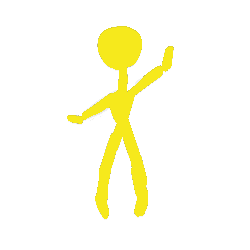

Here is what you will use to navigate on each page:

The Home Icon: Use this to return to the main map!
The SlugStudent Icon: Here you can see what other REAL students have said!

The Phone Icon: Click this to toggle your SlugPhone!
Use the phone icon the Nav-Eraser to Open and Close your SlugPhone!
Coordinates:

Coordinates:

Coordinates: 36.9948° N, 122.0678° W

Coordinates: 37.0291° N, -122.0583° W

Coordinates: 36.9932° N, 122.0652° W

Coordinates: 36°59'47° N 122°4'7° W

Coordinates: 37.0002° N, -122.0482° W

Originally called "Untitled" by creator Kenny Farrell, the Squiggle is cemented as one of UCSC's prized landmarks. Here you can see people doing all sorts of things - from studying to playing with Tech Decks, the Squiggle doesn't discriminate what you do!
At Porter College, there is a lovely koi pond. The pond is a well known spot surrounded by classrooms and the Sesnon Art Gallery. Many people find the place calming and may sit on the benches while studying, reading, or even meditating. You need to check out the hidden koi pond on the other side of campus upon the pogonip trail. It is very different since forest lands surround it.
The Wishing Tree is located in Upper Campus near Tree 9. There are various trails that lead to the Wishing Tree, but the closest way from campus is to go from College 9 and hike up through the Merrill Meadow. Then there is a road that will take you directly there! You may find the Redwood Cathedral Ring and Tree 9 as well! When you get there, you may write your wish on a piece of paper, leave it on one of the branches, and wait for it to come true!
As the water percolates through the fractured marble and limestone, it picks up CO2 and becomes a mild carbolic acid, further chemically eroding the limestone/marble, creating karst geography resulting in caves and sinkholes (such as the giant sinkhole in front of the engineering building). They’re easy to find; simply head down the hill behind the Porter/Kresge Dining Hall into the meadows. Continue into the forest, and there will be a path. Follow this path down, and it will lead you directly to the Porter Caves! HellHole is another notable mention worth exploring. Adventure Awaits!
The Garden of Eden is a well-known hidden hotspot where students relax under the sun or swim in the bright blue creeks. It is a very clean environment with beautiful scenery making it the perfect place to relax on a sunny day. Head up the hill beside Merrill, once you reach the top of it you will turn right. As you continue walking along that path, you will eventually pass the apartments on your right. You will then hit a trailhead. Follow this trailhead until you reach the bottom. There will be an option to go to the right but stay to the left. This will lead you to a road that you can cross. Head straight down onto railroad tracks and follow them heading left, and you will eventually find this spot on your right. It’s a decent walk alongside the railroad so be prepared. Note that it is an uphill hike on the way back!
The Porter Meadows is a grassy area filled with vegetation and many trees that is west of the Porter dining hall. Many sorts of activities may take place here. Many people come to hike and explore the area since it has many winding trails and animals that appear here and there. Others like to walk their dogs or go for a run. Some students go for the various raves and smoke-outs. These areas include the cave gulch and the forest area near the Empire Grade road. Be careful when hiking there at night. Bring a flashlight and some good hiking shoes!
Walking on the Pogonip trail and keeping forward, you’ll reach the historic Lime Kilns on your left which is something to definitely check out. On top of the kilns is The Rock Garden which is a quiet and peaceful place where people come and write down their dreams, secrets, etc and place them under rocks. Heading into the location, you’ll see a pathway of rocks leading to the center of the area that is marked by rocks in the shape of a peace sign. Around the area, you’ll see pillars of rocks.
Ready to see what your fellow peers and alumni have said about these landmarks? Then go ahead and click through this gallery of REAL student submitted testimonies. Also, look out for their doodle versions throughout your travels on SlugSpots!
Looking for some cool hangout spots? Need a quiet spot to study? Maybe you just want to "meditate"?
Well, you have come to the right place. With SlugSpots you can discover a whole plethera of UCSC landmarks! Chosen by students, for students. So go ahead, choose your affiliation and begin your walk on the slug trail!

Lead Programmer, Designer, Concept Artist
Designer, Team Management, Asset Outreach
Lead Artist, Designer, Researcher
Artist, Designer, Researcher

Researcher